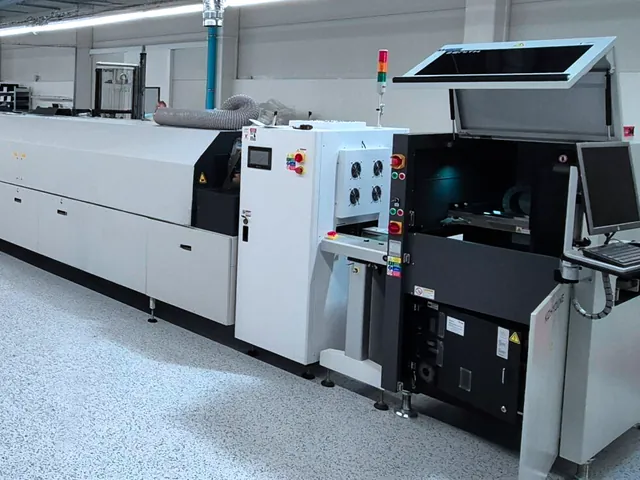
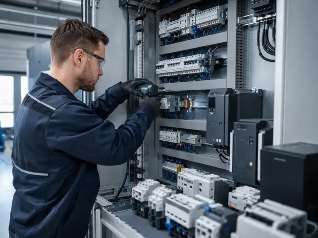
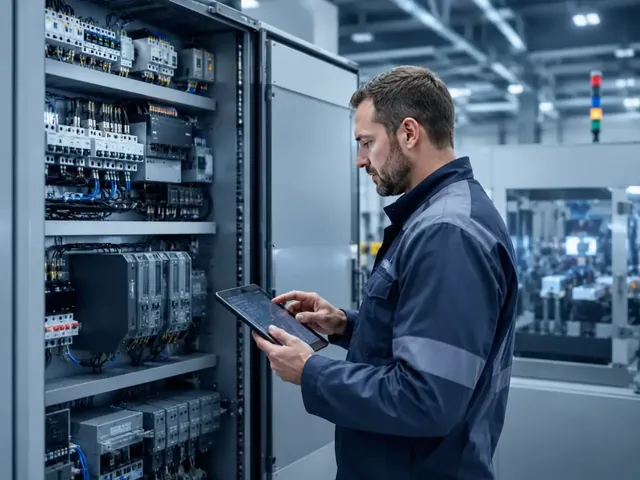
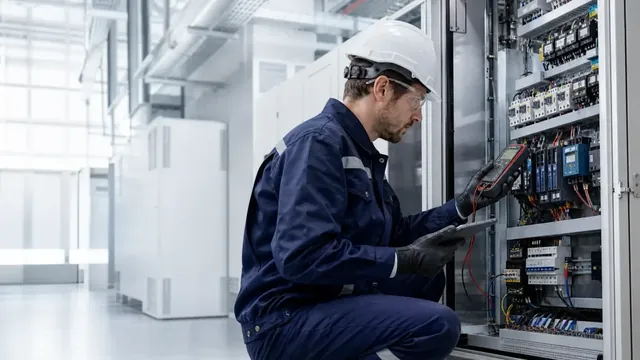

Služby
Služby pro výrobní provozy.
Snižujeme firmám spotřebu energie, zlepšujeme technické prostředí a udržujeme technologie ve spolehlivém provozu.


01
Analýza spotřeby
Provádíme analýzu spotřeby budov a technologií se zaměřením na snížení spotřeby energií a provozních nákladů. Navrhujeme efektivní opatření pro dosažení dlouhodobých úspor.
- Měření kvality elektrické sítě
- Analýza množství elektrické energie
- Optimalizace spotřeby
- Optimalizace kapacity záložních zdrojů

02
Elektroprojekční činnost
Na základě zjištěných skutečností a naměřených dat navrhneme optimální řešení a následně vytvoříme projekt jehož cílem může být snížení energetické náročnosti a zlepšení enviromentálního prostředí dotčených prostor.
- Kompletní projekce nových elektrických rozvodů pro výrobní haly
- Návrh a optimalizace Layoutu výrobní haly
- Výpočet a simulace spotřeby elektrické energie
- Výpočet a zatížení záložních zdrojů pro výrobní linky
03
Technologie
Zajišťujeme dodávky elektro technologií pro budovy, výrobní haly a průmyslové provozy. Máme řešení, které chrání a pomáhá optimalizovat a zefektivnit výrobní procesy. Modernizace stávajících technologií s využitím vlastních konstrukčních a technických znalostí.
- Elektrotechnologie
- Monitorování a řízení spotřeby
- Záložní zdroje
- Bateriové úložiště

04
Instalace
Podle zjištěných skutečností, naměřených hodnot a projektového návrhu zajistíme instalaci nových technologií i doplňujících prvků, které pomohou zvýšit stabilitu, účinnost a kvalitu provozu.
- Instalace námi dodaných technologií
- Instalace a doplnění technologických linek
- Přesun, přestavby a optimalizace technologických linek
- Záložní zdroje a bateriové úložiště

05
Servis
Poskytujeme rychlý a profesionální servis. Postaráme se o údržbu i případné opravy technologií.
- Servis námi nainstalovaných technologií
- Pravidelné prohlídky technologií
- Záruční a pozáruční servis
- Kalibrace a ověření vyhrazených technologií

06
Revize
Provádíme pravidelnou odbornou kontrolu a revize námi namontovaných elektro technologií, které zaručují bezpečný a kontinuální provoz.
- Výchozí revize technologií a instalaci před uvedením do provozu
- Pravidelné revize nainstalovaných technologií
- Posouzení a schválení shody dle platných požadavků a norem
- Průběžná konzultace aktuálního stavu
Nevíte, kterou službu potřebujete?
Každý projekt začínáme důkladným posouzením aktuálního stavu a potřeb zákazníka.